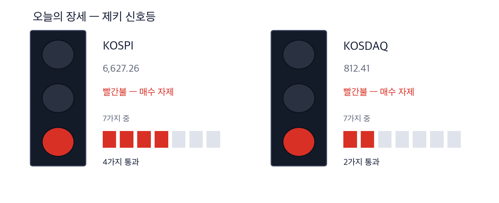
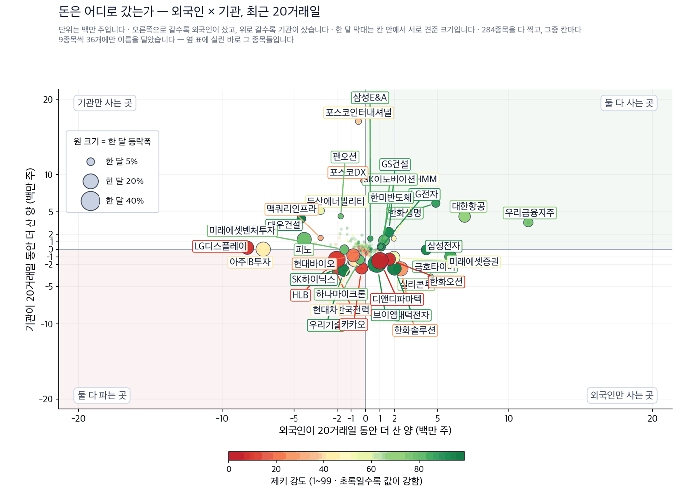
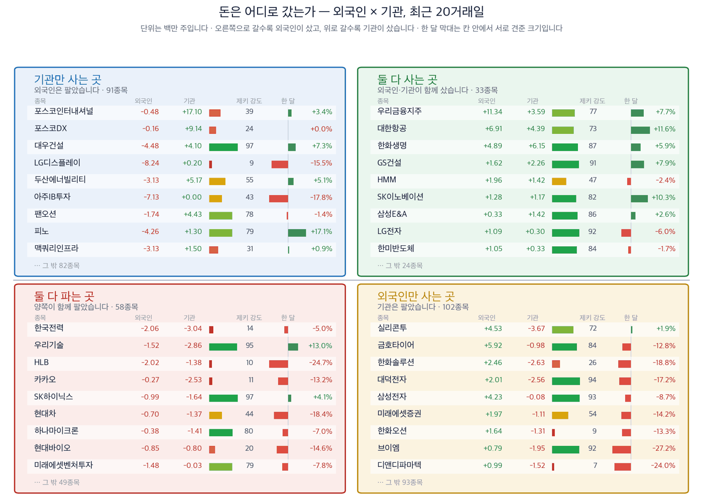

코스피 6,627.26 (-0.85%) | 코스닥 812.41 (+0.70%) | 제키 신호등 빨간불 | 나스닥 25,981.57 (-0.78%) | 원/달러 1,360.8원 |

| 켜진 등 | 오늘의 국면입니다. 초록은 매수 우위, 노랑은 관망, 빨강은 매수 자제입니다. |
| 채워진 칸 | 7가지 조건 중 몇 개를 통과했는지입니다. 칸이 많이 찰수록 시장 구조가 튼튼합니다. |
| 칸이 다 찼는데 노랑·빨강이면 | 다른 이유로 한 단계 낮춘 것입니다. 그림 아래에 그 이유를 적었습니다. |
제키 신호등은 저희가 시장을 7가지 기준으로 재서 하나의 등으로 바꾼 것입니다. 초록불은 저희 기준으로 사기 좋은 국면이고, 노란불은 관망, 빨간불은 새로 사는 것을 자제하는 국면입니다. 9월 15일 코스피는 7가지 가운데 4가지만 통과했고, 코스닥은 2가지만 통과했습니다. 둘 다 빨간불입니다.
원·달러 환율이 두 달 새 200원 내렸습니다. 최근 한 달만 봐도 지난달 초 1,430원대에서 이달 1,340원대로 내려왔습니다. 그 사이 코스피는 제자리였습니다. 그런데 업종 순위는 통째로 바뀌었습니다.
9월 들어 9월 14일까지 은행 업종 지수는 5.0% 올랐습니다. 같은 기간 코스피는 1.99% 내렸습니다. 항공이 포함된 운송 업종은 2.35% 올랐습니다. 반대편에서 자동차 업종은 6.79%, 식품이 포함된 필수소비재 업종은 9.47% 내렸습니다. (한국경제)
그런데 간밤에 그 환율이 되돌아섰습니다. 국제 유가가 4.37% 뛰어 배럴당 105.82달러가 됐고, 미국 10년 만기 국채 금리는 연 5.00%로 마감했습니다. 원·달러는 뉴욕 마감 기준 1,360.8원까지 올랐습니다. 서울이 열리기 전에 생긴 일입니다.
간밤 뉴욕 증시도 내렸습니다. 나스닥은 25,981.57로 마감해 0.78% 내렸고, S&P 500은 7,585.73으로 0.45% 내렸습니다. 서울은 뉴욕이 닫힌 뒤에 열리므로, 오늘 아침 반도체가 받는 압력은 여기서 옵니다.
그래서 오늘 물어야 할 것은 하나입니다. 환율이 되돌아서면 이 업종 재편도 되돌아갈까요? 저희가 값을 재 보니 세 갈림길이 나왔습니다. 환율과 금리 둘 다에서 이익을 얻는 곳, 환율 하나에만 기대는 곳, 그리고 애초에 환율이 아니라 달러 수주로 버는 곳입니다.
1. 은행은 환율이 되돌아서도 남는 이유가 하나 더 있습니다. 원·달러가 내리면 은행은 외화환산이익이 늘고 자본비율이 좋아집니다. 여기에 국채 금리 상승이 겹쳤습니다. 환율이 되돌아서면 첫 번째 이유는 사라지지만 두 번째는 남습니다. 저희가 보는 9종목의 평균 강도로 잰 은행 업종 순위는 8위에서 6위로 올라섰습니다.
2. 항공은 환율 하나에만 기대고 있고, 유가가 정반대로 움직였습니다. 항공유와 항공기 리스료는 달러로 냅니다. 그래서 원화가 오르면 비용이 줄어듭니다. 그런데 어젯밤 유가가 올랐습니다. 연료비는 환율이 줄여 준 것을 다시 늘립니다. 항공사 업종 순위는 8위에서 9위로 내려왔습니다.
3. 전력기기는 원화가 오르면 손해를 보는 쪽인데, 값은 따로 움직입니다. 미국 인공지능 데이터센터가 변압기와 케이블을 사 갑니다. 대금은 달러로 받습니다. 원화가 오르면 원화 환산 매출이 줄어듭니다. 그런데 이 업종 안에서 종목별로 값이 크게 갈렸습니다. 뒤에서 숫자로 보여 드리겠습니다.
이번 주의 가장 큰 일정은 미국 금리 결정입니다. 아래 값은 모두 9월 15일 기준입니다.
| 날짜 | 무엇을 보는가 | 넘으면 어떻게 되는가 |
|---|---|---|
| 9월 16~17일 (현지시간) | 미국 연방공개시장위원회 금리 결정 | 매일경제는 인상 확률을 92%로 전했습니다. 올리면 10년물 금리가 5%대에 자리를 잡고, 은행의 이자 마진은 넓어집니다 |
| 9월 17일 새벽 (한국시간) | 금리 결정 발표 | 서울이 열기 전에 결과가 나옵니다. 17일 아침 개장가에 그대로 들어갑니다 |
| 9월 15일 (마감) | 미국 10년물 국채 금리 5.00% | 2007년 7월 이후 가장 높습니다. 이 수준이 이어지면 성장주는 할인율 부담이 커지고, 이자로 버는 업종은 반대가 됩니다 |
| 무엇을 보는가 | 지금 값 | 넘으면 어떻게 되는가 |
|---|---|---|
| 원·달러 환율 | 1,360.8원 | 1,380원을 넘으면 은행과 항공을 올린 이유가 약해지고, 자동차와 식품에는 반대로 이롭습니다 |
| 서부텍사스산 원유 | 105.82달러 | 110달러를 넘으면 항공 연료비가 환율이 줄여 준 몫을 지웁니다 |
| 코스피 오른 종목 수 | 312개 / 631개 | 어제 오른 종목이 312개, 내린 종목이 306개였습니다. 이 수가 절반을 밑돌면 지수가 올라도 시장은 좁아진 것입니다 |
아래 6종목은 저희가 들고 있지 않은 이름입니다. 종목마다 저희가 잰 숫자와 함께, 무엇이 나오면 이 이야기가 맞고 무엇이 나오면 틀리는지를 적었습니다.
은행은 이번 재편에서 근거가 둘입니다. 환율이 내리면 외화 자산을 원화로 바꿀 때 이익이 늘고, 자본비율도 좋아집니다. 금리가 오르면 예금과 대출의 금리 차이가 벌어집니다. 하나증권 최정욱 연구원은 은행을 원·달러 하락의 수혜주로 꼽으면서, 국채 금리가 오르는 동안 방어적 성격의 매력도 커졌다고 설명했습니다.
다만 은행 안에서도 외국인이 산 곳과 판 곳이 갈렸습니다. 우리금융지주는 저희가 보는 전체 종목 가운데 외국인 20거래일 순매수 1위였습니다. 신한지주는 반대로 외국인이 팔고 기관이 받았습니다.
종가 36,300원 | 당일 -1.36% | 한 달 +7.7% | 석 달 +9.8% | 제키 강도 77 | 고점 대비 -11.0% |
| 누가 | 4대 금융지주 가운데 하나인 우리금융지주입니다. |
| 무엇을 | 9월 15일 -1.36% 내려 36,300원에 마감했습니다. 한 달 동안은 +7.7% 올랐습니다. |
| 언제 | 환율이 빠르게 내린 것은 지난달 말부터입니다. 9월 들어 은행 업종 지수는 5.0% 올랐습니다. |
| 어디서 | 한국거래소가 집계하는 은행 업종 지수 안에서, 이 회사는 9.02% 올라 두 번째로 높은 상승률을 냈습니다. (한국경제) |
| 왜 | 원·달러가 내리면 외화환산이익이 늘고 보통주자본비율이 개선됩니다. 국채 금리가 오르면 이자 마진이 넓어집니다. 두 힘이 같은 방향으로 작용했습니다. |
| 어떻게 | 외국인이 20거래일 동안 +1,133.8만 주를 순매수해 저희가 보는 종목 가운데 1위였고, 기관도 +359.2만 주를 함께 샀습니다. 저희 4가지 조건 가운데 3가지를 채웠습니다. 제키 강도는 77로 90에 못 미칩니다. |
확인 신호 — 9월 15일 종가 36,300원 위에서 버티고, 외국인과 기관의 20거래일 순매수가 양쪽 모두 유지되는 것입니다. 저희가 이 종목을 고른 근거가 그 둘이기 때문입니다.
철회 기준 — 9월 15일 종가 36,300원을 밑돌거나, 원·달러가 1,380원 위로 올라서는 것입니다. 그러면 환율이라는 근거가 사라집니다.
종가 111,900원 | 당일 -2.70% | 한 달 +4.2% | 석 달 +4.9% | 제키 강도 82 | 고점 대비 -2.7% |
| 누가 | 은행 업종에서 저희 강도가 가장 높은 신한지주입니다. |
| 무엇을 | 9월 15일 -2.70% 내려 111,900원에 마감했습니다. 52주 고점과의 거리는 -2.7%입니다. |
| 언제 | 9월 들어 9월 14일까지 5.23% 올랐습니다. |
| 어디서 | 한국거래소 은행 업종 지수 안에서 함께 오른 6개 종목 가운데 하나였습니다. (한국경제) |
| 왜 | 우리금융지주와 같은 경로입니다. 환율 하락과 금리 상승이 함께 작용했습니다. |
| 어떻게 | 다만 수급이 갈렸습니다. 외국인은 20거래일 동안 -171.0만 주를 팔았고 기관이 +266.4만 주를 받았습니다. 저희 4가지 조건 가운데 2가지만 채웠습니다. |
확인 신호 — 외국인 20거래일 순매수가 순매도에서 순매수로 돌아서는 것입니다. 지금 모자란 조건이 그것입니다.
철회 기준 — 9월 15일 종가 111,900원을 밑돌면서 기관 순매수까지 줄어드는 것입니다. 그러면 남은 근거가 없습니다.
항공사는 항공유와 항공기 리스료를 달러로 냅니다. 원화가 오르면 그 비용이 바로 줄어듭니다. 상상인증권 이서연 연구원은 지난달 말부터 시작된 원화 강세가 이어지면 항공사 손익에 긍정적으로 작용할 것으로 내다봤습니다.
문제는 같은 비용의 다른 쪽입니다. 어젯밤 서부텍사스산 원유가 하루에 4.37% 올랐습니다. 연료비는 유가와 환율을 곱해서 정해집니다. 환율이 줄여 준 몫을 유가가 되돌리고 있습니다. 그래서 이 테마는 근거가 하나뿐이고, 그 하나가 지금 흔들립니다.
종가 29,350원 | 당일 -1.01% | 한 달 +11.6% | 석 달 +0.2% | 제키 강도 73 | 고점 대비 -3.3% |
| 누가 | 국내 최대 항공사인 대한항공입니다. |
| 무엇을 | 9월 15일 -1.01% 내려 29,350원에 마감했습니다. 한 달 동안은 +11.6% 올랐습니다. 52주 고점과의 거리는 -3.3%로 고점 가까이에 있습니다. |
| 언제 | 9월 들어 9월 14일까지 6.23% 올랐습니다. 아시아나항공 마일리지를 10년간 그대로 쓰도록 하는 통합안은 9월 15일 공정거래위원회가 승인했습니다. |
| 어디서 | 한국거래소 운송 업종 지수 안에서 대장주로 꼽혔습니다. (한국경제·매일경제) |
| 왜 | 달러로 내는 비용이 줄기 때문입니다. 연료와 리스료가 그 비용입니다. |
| 어떻게 | 외국인이 20거래일 동안 +690.9만 주를 순매수해 저희가 보는 종목 가운데 2위였고, 기관도 +439.1만 주를 샀습니다. 저희 4가지 가운데 3가지를 채웠습니다. 제키 강도는 73입니다. |
확인 신호 — 서부텍사스산 원유가 배럴당 100달러 아래로 내려오면서 9월 15일 종가 29,350원 위를 지키는 것입니다. 환율 하나로 버티는 테마이므로 유가가 같이 도와줘야 합니다.
철회 기준 — 유가가 배럴당 110달러를 넘는 것입니다. 그러면 환율이 줄여 준 연료비를 유가가 되돌리고, 저희가 이 종목을 고른 이유가 사라집니다. 이때 저희는 이 테마를 제외합니다.
이 테마는 앞의 둘과 방향이 반대입니다. 미국 인공지능 데이터센터가 변압기와 케이블을 사 갑니다. 대금은 달러로 받으므로 원화가 오르면 원화 환산 매출이 줄어듭니다. 그런데도 주문 자체가 빠르게 늘고 있습니다.
효성중공업은 9월 15일, 미국 빅테크 두 곳에 초고압변압기를 공급하는 계약 두 건을 맺었다고 발표했습니다. 765킬로볼트급 2,200억원, 345킬로볼트급 1,665억원으로 합계 3,865억원입니다. 이 회사의 올해 8월까지 신규 수주액은 9조3000억원입니다. 지난해 연간 실적을 이미 넘었습니다. 연간 목표도 8조4000억원에서 12조원으로 올라갔습니다. (한국경제)
국내에도 같은 방향의 일이 하나 더 있습니다. 정부가 송전망 수용성 제고방안을 내놓으면서 새로 짓는 송전철탑을 40% 줄이고 주민이 많이 사는 곳은 지하에 묻기로 했습니다. 철탑을 세우는 대신 땅에 묻으면 들어가는 것이 케이블입니다. (매일경제)
그런데 값이 종목마다 크게 갈렸습니다. 가장 큰 수주를 발표한 회사의 주가는 한 달 동안 내렸고, 기사에 이름이 나오지 않은 케이블 회사는 한 달 동안 47.2% 올랐습니다. 기사의 크기와 주가의 방향이 같지 않다는 것을 그대로 보여 드립니다.
종가 246,000원 | 당일 +4.24% | 한 달 +47.2% | 석 달 +68.6% | 제키 강도 99 | 고점 대비 -21.5% |
| 누가 | 전력용 케이블을 만드는 가온전선입니다. |
| 무엇을 | 9월 15일 +4.24% 올라 246,000원에 마감했습니다. 코스피가 내린 날 올랐습니다. 석 달 동안은 +68.6% 올랐습니다. |
| 언제 | 송전망 지중화 방안은 9월 16일 자 지면에 실렸습니다. |
| 어디서 | 산업통상부가 내놓은 송전망 수용성 제고방안에서, 장성과 대전 등의 송전선로를 땅에 묻는 방식이 제시됐습니다. (매일경제) |
| 왜 | 송전철탑을 40% 덜 짓고 지하에 묻으면 철탑 대신 케이블이 들어갑니다. 지중화는 같은 거리를 잇는 데 더 많은 케이블을 씁니다. |
| 어떻게 | 저희 4가지 조건을 모두 채운 유일한 종목입니다. 제키 강도 99, 한 달 +47.2%, 외국인 +25.7만 주, 기관 +36.4만 주입니다. |
확인 신호 — 9월 15일 종가 246,000원 위에서 버티고 제키 강도가 90 위를 지키는 것입니다. 이 종목을 4가지 모두 통과로 만든 조건이 그것입니다.
철회 기준 — 9월 15일 종가 246,000원을 밑돌거나 제키 강도가 90 아래로 내려가는 것입니다. 한 달 사이 오른 폭이 커서, 되돌림이 나오면 그 폭도 큽니다.
종가 196,700원 | 당일 -0.41% | 한 달 -4.7% | 석 달 -23.6% | 제키 강도 93 | 고점 대비 -38.2% |
| 누가 | 배전반과 전력 제어 설비를 만드는 LS ELECTRIC입니다. |
| 무엇을 | 9월 15일 -0.41% 내려 196,700원에 마감했습니다. 석 달 동안 -23.6% 내렸습니다. |
| 언제 | 미국 데이터센터의 전력 설비 발주는 올해 내내 이어지고 있습니다. |
| 어디서 | 저희가 계산한 전기장비 업종 순위는 5위에서 7위로 내려왔고, 이 회사는 그 업종 안에서 강도 3위입니다. |
| 왜 | 전력기기 수요는 미국 데이터센터에서 옵니다. 대금이 달러이므로 원화 강세는 원화 환산 매출을 줄입니다. |
| 어떻게 | 제키 강도는 93으로 높지만 한 달 수익률이 -4.7%로 음수입니다. 외국인은 +62.9만 주를 샀고 기관은 -31.3만 주를 팔았습니다. 4가지 가운데 2가지입니다. |
확인 신호 — 한 달 수익률이 양수로 돌아서면서 기관 20거래일 순매수가 매수로 바뀌는 것입니다. 지금 모자란 조건 2가지가 그것입니다.
철회 기준 — 제키 강도가 90 아래로 내려가는 것입니다. 지금 이 종목을 명단에 남겨 둔 근거가 강도 하나뿐이기 때문입니다.
종가 2,725,000원 | 당일 -2.36% | 한 달 -7.8% | 석 달 -30.0% | 제키 강도 76 | 고점 대비 -40.8% |
| 누가 | 초고압변압기를 만드는 효성중공업입니다. |
| 무엇을 | 9월 15일 -2.36% 내려 2,725,000원에 마감했습니다. 3,865억원 규모의 미국 수주를 발표한 날입니다. |
| 언제 | 두 건의 계약은 9월 들어 맺어졌고 9월 15일 공시됐습니다. |
| 어디서 | 계약을 맺은 곳은 현지 판매 조직인 HICO아메리카세일즈앤드테크입니다. 변압기가 들어가는 곳은 미국 남부와 북부에 새로 짓는 데이터센터입니다. (한국경제) |
| 왜 | 인공지능 데이터센터가 늘면 고전압을 다루는 변압기가 먼저 필요합니다. 회사는 2020년 테네시주 멤피스 공장을 인수해 현지에서 만들고 있습니다. |
| 어떻게 | 그런데 값이 따라오지 않았습니다. 한 달 -7.8%, 석 달 -30.0%이고 52주 고점과의 거리는 -40.8%입니다. 제키 강도 76, 4가지 가운데 1가지만 채웠습니다. |
확인 신호 — 한 달 수익률이 양수로 돌아서고 제키 강도가 80을 넘는 것입니다. 수주가 실적으로 확인되는 다음 분기 발표가 그 자리입니다.
철회 기준 — 9월 15일 종가 2,725,000원을 밑돌면서 강도가 더 내려가는 것입니다. 기사가 크다고 종목이 되는 것은 아니며, 지금은 값이 따라오지 않은 쪽입니다.
세 테마의 결론을 한 표에 모았습니다.
| 테마 | 종목 | 제키 강도 | 근거의 무게 |
|---|---|---|---|
| 환율과 금리 · 은행 | 우리금융지주 (316140) | 77 | 근거 있음 |
| 환율과 금리 · 은행 | 신한지주 (055550) | 82 | 확인 필요 |
| 환율만 · 항공 | 대한항공 (003490) | 73 | 근거 있음 |
| 달러 수주 · 송전과 전선 | 가온전선 (000500) | 99 | 근거 확실 |
| 달러 수주 · 송전과 전선 | LS ELECTRIC (010120) | 93 | 확인 필요 |
| 달러 수주 · 송전과 전선 | 효성중공업 (298040) | 76 | 확인 필요 |
저희는 종목마다 4가지를 셉니다. 한 달 동안 올랐는가, 제키 강도가 90을 넘는가, 외국인이 20거래일 동안 순매수했는가, 기관이 순매수했는가입니다. 딱지는 이 수가 정합니다.
| 종목 | ①값이 올랐나 | ②강도 90↑ | ③외국인 순매수 | ④기관 순매수 | 충족 | 근거의 무게 |
|---|---|---|---|---|---|---|
| 우리금융지주 (316140) | O | X | O | O | 3/4 | 근거 있음 |
| 신한지주 (055550) | O | X | X | O | 2/4 | 확인 필요 |
| 대한항공 (003490) | O | X | O | O | 3/4 | 근거 있음 |
| 가온전선 (000500) | O | O | O | O | 4/4 | 근거 확실 |
| LS ELECTRIC (010120) | X | O | O | X | 2/4 | 확인 필요 |
| 효성중공업 (298040) | X | X | O | X | 1/4 | 확인 필요 |
수급 값의 기준일은 9월 9일입니다. 한국거래소의 투자자별 매매 자료를 받아 오는 길이 9월 10일부터 막혀 있어 그 뒤 4거래일은 아직 들어오지 않았습니다. 값과 등락은 9월 15일 기준이고, 수급만 9월 9일까지입니다.
제키 강도 90은 일부러 높게 잡은 기준입니다. 그래서 오늘 4가지를 모두 채운 것은 가온전선 하나뿐입니다.
아래 두 그림은 저희가 보는 종목 가운데 거래가 충분한 284개를 외국인과 기관의 20거래일 순매수로 나눈 것입니다. 기준일은 9월 9일입니다.

| 점 하나 | 종목 하나입니다. 가로·세로 위치가 두 값을 그대로 나타내고, 가운데 가로·세로로 그어진 두 선이 기준선입니다. 네 귀퉁이의 이름표가 그 칸의 뜻입니다. |
| 점 크기 | 최근 한 달 등락폭입니다. 오르든 내리든 크게 움직였으면 큰 점입니다. |
| 점 색 | 제키 강도입니다. 초록일수록 주가가 시장에서 강합니다. |
| 30종목만 | 이름이 겹치면 못 읽기 때문입니다. 가운데 몰린 나머지는 움직임이 거의 없는 종목들이라 뺐습니다. |

| 네 칸 | 가로와 세로 두 값이 각각 기준선을 넘었는지로 넷을 가릅니다. 오른쪽 위는 둘 다 넘은 곳, 왼쪽 아래는 둘 다 못 넘은 곳, 나머지 두 칸은 한쪽만 넘은 곳입니다. 칸 이름이 그 칸에 든 종목의 상태를 한 문장으로 적어 둔 것입니다. |
| 가운데 두 칸 | 두 기간을 견주는 자리입니다. 글자 A~E가 있으면 이 업계가 쓰는 표준 등급으로, A는 강한 매수, B는 매수 우세, C는 매수와 매도가 반반, D는 매도 우세, E는 강한 매도를 뜻합니다(전체를 다섯으로 나눈 순위라 A가 상위 20%입니다). 숫자가 있으면 그 기간에 산 양에서 판 양을 뺀 것입니다. |
| 칸마다 9종목 | 그 칸에서 움직임이 가장 큰 순서입니다. 나머지는 칸 아래에 몇 종목인지만 적었습니다. 옆 산점도가 이름을 다는 종목이 바로 이 9종목씩입니다. |
| 한 달 막대 | 0을 가운데 두고 오른쪽이 상승, 왼쪽이 하락입니다. 길이는 같은 칸 안에서만 서로 견주십시오 — 칸마다 기준이 다릅니다. |
| 제키 강도 | 1~99 순위입니다. 막대가 길수록, 초록에 가까울수록 그 종목의 주가가 시장에서 강합니다. |
이 그림은 돈이 어디에 들어갔는지를 보여 줄 뿐이고, 앞으로 오를지를 맞히지는 못합니다. 저희가 두 시장 20년 자료로 네 번 검정했고 네 번 모두 다음 한 달을 예고하지 못했습니다. 그래서 마지막 확인용으로만 씁니다.
기사가 맞고 값이 올랐어도 돈이 따라왔는지는 따로 봐야 합니다. 아래는 위에서 다룬 6종목만 모은 것이며, 모두 9월 9일까지의 20거래일 순매수입니다.
| 종목 | 외국인 20거래일 | 기관 20거래일 | 어느 쪽이 샀나 | 기준일 |
|---|---|---|---|---|
| 우리금융지주 (316140) | +1,133.8만 주 | +359.2만 주 | 양쪽 모두 순매수 | 2026-09-09 |
| 신한지주 (055550) | -171.0만 주 | +266.4만 주 | 기관만 순매수 | 2026-09-09 |
| 대한항공 (003490) | +690.9만 주 | +439.1만 주 | 양쪽 모두 순매수 | 2026-09-09 |
| 가온전선 (000500) | +25.7만 주 | +36.4만 주 | 양쪽 모두 순매수 | 2026-09-09 |
| LS ELECTRIC (010120) | +62.9만 주 | -31.3만 주 | 외국인만 순매수 | 2026-09-09 |
| 효성중공업 (298040) | +2.9만 주 | -2.3만 주 | 외국인만 순매수 | 2026-09-09 |
| 근거의 무게 | 종목 | 오름 | 내림 | KOSPI보다 나음 | 평균 초과 |
|---|---|---|---|---|---|
| 아직 5거래일이 지난 종목이 없습니다. 실린 28종목은 기록되어 있고, 날이 차는 대로 여기에 셉니다. | |||||
저희가 업종마다 소속 종목의 제키 강도를 평균한 값입니다. 9월 15일 기준 상위 9개이고, 화살표는 직전 집계와 비교한 순위 변화입니다.
| 순위 | 업종 | 업종 강도 | 순위 변화 |
|---|---|---|---|
| 1 | 석유와가스 | 91 | — |
| 2 | 생명보험 | 86 | — |
| 3 | 반도체와반도체장비 | 83 | ▲1 |
| 4 | 건설 | 80 | ▼1 |
| 5 | 손해보험 | 75 | ▲2 |
| 6 | 은행 | 73 | ▲2 |
| 7 | 전기장비 | 72 | ▼2 |
| 8 | 화장품 | 71 | ▲4 |
| 9 | 항공사 | 71 | ▼1 |
반대편도 함께 보셔야 합니다. 자동차는 45위, 자동차부품은 42위이고 둘 다 D등급입니다. 자동차부품은 8계단 내려왔습니다. 환율이 바꾼 것은 오른 쪽만이 아닙니다.
9월 16일 장중에 3가지만 보시면 됩니다.
| 언제 | 무엇을 | 왜 |
|---|---|---|
| 개장 30분 | 원·달러가 1,360.8원 위에 머무는지 | 환율이 더 오르면 은행과 항공을 올린 이유가 약해지고, 자동차와 식품에는 반대로 이롭습니다 |
| 장중 | 은행 업종과 항공 업종이 같이 가는지 | 두 업종이 갈라지기 시작하면 이 재편이 환율 하나로 설명되지 않는다는 뜻입니다 |
| 마감 30분 | 오른 종목 수가 312개보다 많은지 | 지수보다 이 숫자가 시장의 넓이를 더 잘 보여 줍니다 |
9월 17일 새벽 미국 금리 결정이 이번 주의 전부입니다. 결과가 서울 개장 전에 나오므로 17일 아침 개장가에 바로 들어갑니다. 금리를 올리면 은행과 보험에는 이롭고 성장주에는 부담이 됩니다. 동결하면 국채 금리가 내리면서 오늘 본 재편의 절반이 힘을 잃습니다.
| 말 | 뜻 |
|---|---|
| 제키 강도 | 저희가 보는 전체 종목 가운데 그 종목의 값이 몇 등인지를 1에서 99로 나타낸 값입니다. 99에 가까울수록 시장에서 강합니다 |
| 제키 신호등 | 시장 국면을 7가지 기준으로 재서 초록·노랑·빨강 하나로 바꾼 것입니다 |
| 근거의 무게 | 4가지 조건 가운데 몇 가지를 채웠는지입니다. 4가지면 근거 확실, 3가지면 근거 있음, 2가지 이하면 확인 필요입니다 |
| 20거래일 순매수 | 외국인 또는 기관이 최근 20거래일 동안 사고판 것을 합한 주식 수입니다. 한국거래소가 공시하는 값입니다 |